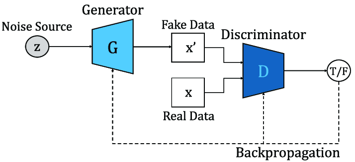
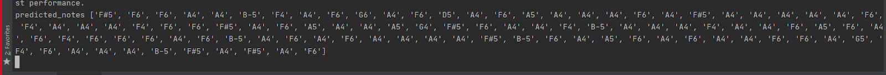

Automatic Music Generation using GAN
B. Preparing the data:
The format of input which is basically the MIDI files of different music which is read by Music21 to generate objects of notes and chords. This data of chords and notes is then fed into our LSTM[x4] network. Each midi is parsed through the Music21 converter. On parsing MIDI files we get a stream object which consists of all notes and chords. The pitch value is encoded into string notation and appended. We encode id of all notes in a chord separating them by a dot in a single string. Output of the network can be easily decoded into notes and chords due to such encoding.
GAN:
GAN (generative adversarial network) is an artificial intelligence algorithm for unsupervised learning. It was proposed by Goodfellow et al. in 2014. GAN is constituted by two networks, generation network G and discriminator network D, G is responsible for generating target objects. D is responsible for discriminating the object generated by the generator from the real object. With the separate training of the two networks and play zero-sum games with each other in the adaptation training. The generator will generate objects that are very similar to the genuine objects, so that the discriminator network cannot distinguish between the generated objects and the real objects, thereby achieving GAN training.
We created the respective MIDI files into numbers to be fed to the model. The model was trained based on the sequence of all the data passed to it.
Based on the data, it generates array of float values which when converted to corresponding notes gives a generated music.
The generated music is still raw an we more preprocessing and post processing we can achieve amazing results
Technologies:
- - Python
- - TensorFlow
- - Music21
- - Keras
- - Tkinter
GUI
GAN Architecture

Notes Generated

PDF Report

Interface